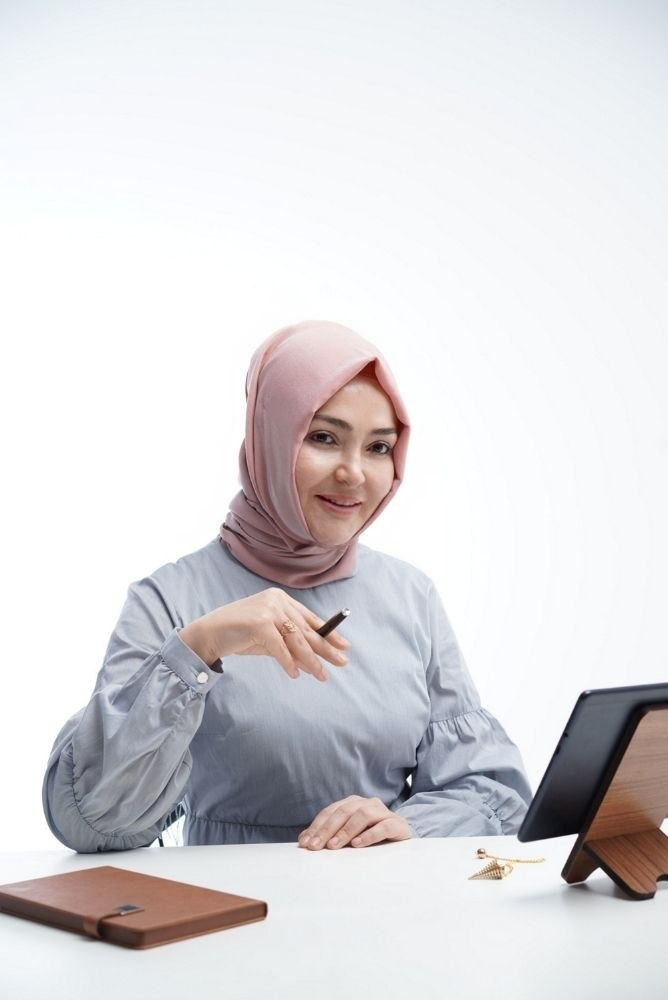

Kodlarını fark et.
Yeniden yaz.
ThetaHealing®, JAAS ve Spiritüel Dowsing ile bilinçaltındaki sınırlayıcı kalıplarla çalışmayı öğren. Birebir danışmanlık ya da sertifikalı uygulayıcılık semineri: yolunu sen seç.

Hayatın çoğunu arka planda çalışan kodlar yönetir.
Bilinçaltı, programlarını büyük ölçüde çocuklukta tamamlar ve onları bir bilgisayar gibi, olumlu mu olumsuz mu ayırt etmeden çalıştırır. Fark etmek ilk adımdır; dönüştürmek bir yöntem ister.
Kendin için mi geldin,
yoksa bu işi öğrenmek için mi?
Birebir danışmanlık
Kendi meselen üzerine, bilinçaltındaki sınırlayıcı inançlarla birlikte çalışacağımız 60 dakikalık online seanslar.
- ThetaHealing® danışmanlığı
- JAAS danışmanlığı
- Online · Zoom

Sertifikalı seminer
Teknikleri öğren, kendi pratiğini kur. Modül modül ilerleyen, uluslararası sertifikalı uygulayıcılık seminerleri.
Seminer yolunu gör →Seminerler
Her modül bir öncekinin üzerine kurulur. Tarih ve ücret her seminerin sayfasında.
Basic DNA
Bilinçaltındaki kalıpları bulmayı ve tespit etmeyi öğrendiğin temel seminer.
Advanced DNA
Basic DNA'nın ardından tekniği derinleştirip uygulamada deneyimlediğin seminer.

Derin Kazı
Kalıpların kökenine inmek için "kazma" tekniğine odaklanan ileri seminer.
Sen ve Yaradan
Seminer açıklaması yakında.
ThetaHealing® 4 Modül
Basic DNA, Advanced DNA, Derin Kazı ve Sen ve Yaradan modüllerinin dördü birlikte.
JAAS Uygulayıcılık
Jean Adrienne Miller'ın geliştirdiği, 144 dosyadan oluşan arınma sistemi.

Spiritüel Dowsing
Sarkaç ile arınma: seans algoritması da içeren bütünlüklü bir sistem.
Atölyeler
Atölye adı
Açıklama yakında.
Atölye adı
Açıklama yakında.
Atölye adı
Açıklama yakında.
Atölye adı
Açıklama yakında.

Kerime Melike Kaan
Matematik öğretmeniyken hayatındaki bir dönüm noktasıyla ThetaHealing® ve JAAS seminerlerine başladı. Bugün JAAS, Spiritüel Dowsing ve Sembol Dili eğitmeni olarak bu teknikleri öğretiyor ve birebir danışmanlık veriyor.
“Sadece fark etmek bile bazen sorunu çözer, bazen de yetersiz kalır.”Hikâyemi oku →
Takvim açık, bilgi şeffaf.
Okumaya buradan başla.
ThetaHealing® Nedir ve Nasıl Çalışır?
Yöntemin temelleri ve bir seansta neler olduğu.
ThetaHealing® Faydaları ve Hayata Etkileri
Sınırlayıcı inançlarla çalışmak gündelik hayatta neyi değiştirir?
Daha fazlası Instagram'da
Günlük paylaşımlar ve duyurular için @mucizekodlarim.
Güncellemeyi başlat.
Formu doldur, seninle iletişime geçelim. Burada yalnızca iletişim bilgisi istiyoruz: sağlık ya da özel bilgi sormuyoruz.
💬Hızlı soru mu? WhatsApp'tan yaz: tarih ve ücret bilgisi için.Bir mesaj uzağındayız.
Tarih, ücret ya da hangi seminerin sana uygun olduğunu sormak için en hızlı yol WhatsApp.